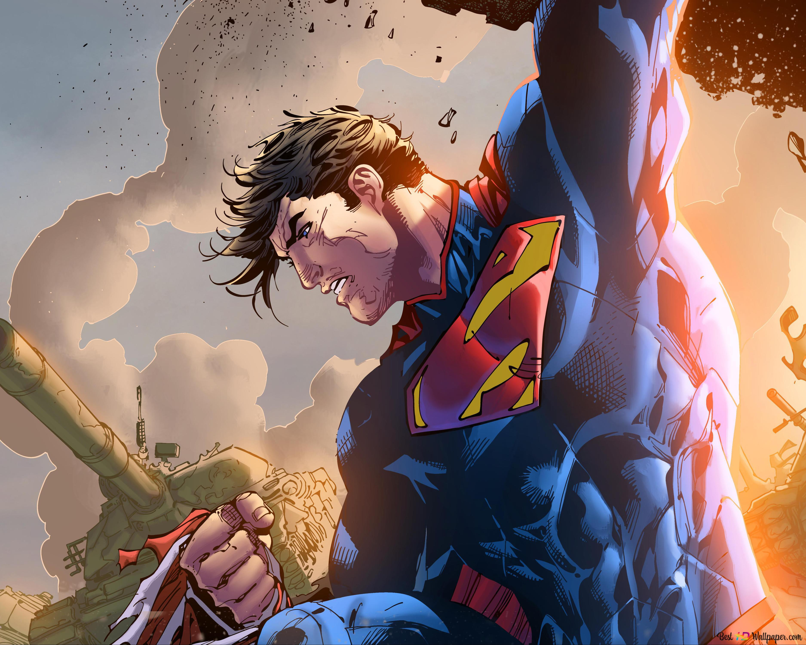
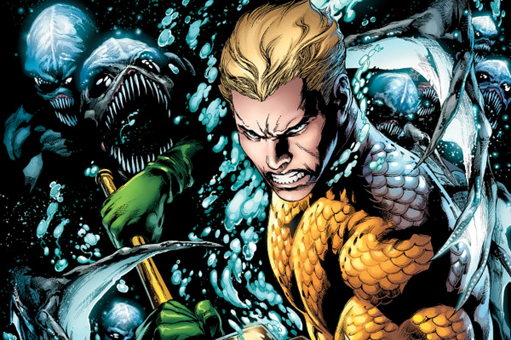
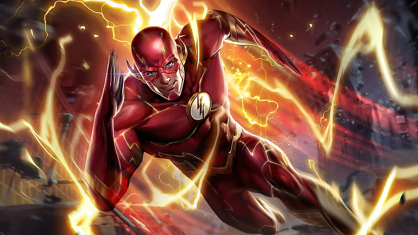
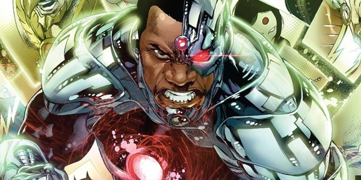
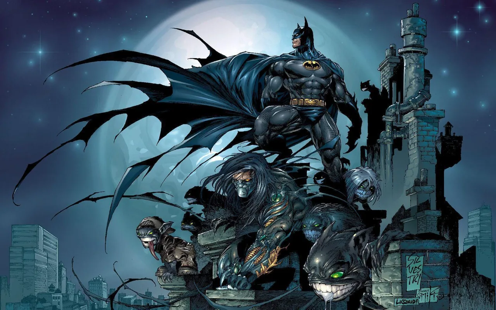

A origem da Liga da Justiça remonta à sua primeira aparição nas histórias em quadrinhos da DC Comics, em 1960. A equipe foi criada por Gardner Fox, um escritor prolífico de quadrinhos, e foi introduzida na edição #28 da revista "The Brave and the Bold", publicada em 1960.
Na história "The Mightiest Team in the World!" (A Equipe Mais Poderosa do Mundo, em tradução livre), a Liga da Justiça foi formada por meio de um encontro casual entre os heróis Superman, Batman, Mulher-Maravilha, Flash (Barry Allen), Lanterna Verde (Hal Jordan), Aquaman e Caçador de Marte (J'onn J'onzz). Esses heróis se uniram para enfrentar uma ameaça alienígena chamada Starro, o Conquistador, que estava invadindo a Terra.
Os heróis decidiram se unir como uma equipe para combater ameaças maiores e proteger o mundo. Eles estabeleceram sua base de operações na Sala da Justiça, uma sede em forma de disco voador localizada em um satélite em órbita da Terra. A Liga da Justiça rapidamente se tornou um sucesso, e suas aventuras em conjunto cativaram os fãs de quadrinhos, levando a inúmeras histórias emocionantes e crossovers com outros personagens do universo DC ao longo dos anos.
Desde então, a formação e a história da Liga da Justiça têm evoluído, com diferentes membros se juntando e saindo da equipe, e várias iterações e reinicializações da equipe ocorrendo em várias séries de quadrinhos, desenhos animados, filmes e outras mídias. No entanto, sua origem como uma equipe de super-heróis poderosos unidos em prol da justiça e da proteção do mundo contra ameaças perigosas ainda é uma parte fundamental da mitologia da Liga da Justiça.
Superman
Superman, também conhecido como o "Homem de Aço", é um super-herói da DC Comics. Ele foi criado por Jerry Siegel e Joe Shuster e fez sua primeira aparição em Action Comics #1 em 1938. Superman é um dos super-heróis mais icônicos e populares de todos os tempos.

Caçador de Marte
Caçador de Marte, também conhecido como J'onn J'onzz, é um super-herói da DC Comics. Ele foi criado por Joseph Samachson e Joe Certa e fez sua primeira aparição em Detective Comics #225 em 1955. Caçador de Marte é o último sobrevivente da raça marciana, também conhecida como Marcianos Verdes.
Aquaman
Aquaman é um super-herói da DC Comics. Ele fez sua primeira aparição em More Fun Comics #73 em novembro de 1941 e foi criado por Paul Norris e Mort Weisinger. Aquaman, cujo nome real é Arthur Curry, é o rei de Atlantis, uma cidade submarina oculta, e é conhecido por sua força sobre-humana, resistência e capacidade de se comunicar com a vida marinha.

Flash
Flash é um super-herói da DC Comics. Ele foi criado por Gardner Fox e Harry Lampert e fez sua primeira aparição em Flash Comics #1 em 1940. Flash é conhecido por sua velocidade sobre-humana e é considerado o homem mais rápido do mundo.

Cibogue
Ciborgue, também conhecido como Victor Stone, é um super-herói da DC Comics. Ele foi criado por Marv Wolfman e George Pérez e fez sua primeira aparição em DC Comics Presents #26 em 1980.

Mulher Maravilha
Mulher-Maravilha, também conhecida como Diana Prince, é uma super-heroína da DC Comics. Ela foi criada por William Moulton Marston e Harry G. Peter, e fez sua primeira aparição em All Star Comics #8 em 1941.
Batman
Batman é um super-herói criado pelo artista Bob Kane e pelo escritor Bill Finger, publicado pela DC Comics. Ele fez sua primeira aparição em Detective Comics #27 em 1939 e desde então se tornou um dos personagens de quadrinhos mais icônicos e duradouros de todos os tempos.

Lanterna Verde
Hal Jordan é um dos personagens mais icônicos que assumiu o manto de Lanterna Verde na DC Comics. Ele é conhecido como um dos principais membros da Tropa dos Lanternas Verdes e já foi o protagonista de várias histórias populares ao longo dos anos.